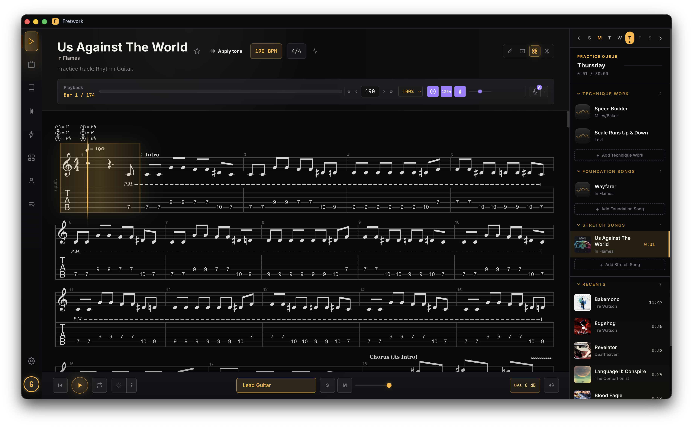

Player: tablature, practice controls, and song-specific “Apply tone”Open full-size ↗
TypeScriptElectron + iOSAxe-Fx III protocol RE
Fretwork
Guitar-practice software for GuitarPro playback and practice tracking, with verified hardware tones over a proprietary Axe-Fx III protocol reverse-engineered through an agentic workflow.
1,065combined commits
~158.8ktext lines
2,487GuitarPro tabs
Commit activity2026 · 1,065 commits · 86 days
JanFebMarAprMayJunJulAug
MonWedFri
- The library contains 2,308 songs and 179 exercises. AlphaTab playback includes looping, tempo control, count-in, metronome, track mixing, and SoundFont audio.
- The resumable ingest pipeline stages exact-artist Songsterr catalogs, recovers from HTTP 429 responses, checks SHA-256 duplicates, parses files with AlphaTab, selects guitar tracks, estimates difficulty and tuning, and writes catalog, display-name, YouTube, and album-art metadata after dry-run validation.
- Weekly curricula and daily queues use goals, favorites, and recents. The practice log stores time per tab, item and measure BPM, and measure accuracy; Profile provides a year calendar, rolling summaries, streaks, focus lists, XP, and filterable daily history. Smart Practice detects notes and drills weak measures.
- Offline research covers 667 artist/song profiles and 4,873 citations. It maps real equipment to Axe-Fx models through 5,063 mappings and compiles 1,460 scenes while retaining uncertainty from the sources.
- An agentic workflow completely reverse-engineered the proprietary Axe-Fx III/Axe-Edit protocol from 3,252 captured handshake messages, recovering the editor state machine, 14 × 6 grid addressing, parameter transport, polling coexistence, and MIDI read/write semantics.
axefx-mcppackages the recovered protocol behind Node/Electron and MCP adapters with exact definitions for 333 amp models, 87 drives, and 4,312 effect-bound parameters.- Each “Apply tone” operation validates the recipe, snapshots affected edit-buffer state, applies changes serially, verifies MIDI readback, and rolls back on failure. It does not start a live agent or store a preset.
- Fretwork also records and exports takes, includes fretboard theory tools, and runs on Electron desktop and Capacitor iOS.
Started 09 Jan 2026Latest commit 05 Aug 2026Span 208 days
Fretwork repository ↗axefx-mcp repository ↗